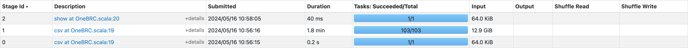

1BRC in Scala with Spark
Update 2024-06-03: Add sections on scala-cli and datafusion-comet
During January, The One Billion Row Challenge, a very interesting challenge arose for the Java community. The goal is to process a CSV file containing one billion rows as fast as possible.
As soon as the challenge was released, I was wondering how Spark performs in local mode compared to raw Java code.
This post is inspired by 1BRC in SQL with DuckDB by Robin Moffatt.
Setup the project
A project needs to be bootstrapped. Thankfully, sbt has a command for that and holdenk has made a template for Spark
sbt new holdenk/sparkProjectTemplate.g8
Between each attempt, 2 actions need to be performed
- Use sbt in interactive mode and launch the
packagecommand (very quick, around 1s) - Run
spark-submiton an existing Spark installation
./spark-submit --class com.yannmoisan.1brc.1BRC --master "local[*]" ~/projects/perso/1brc-spark/target/scala-2.12/1brc-spark_2.12-0.0.1.jar
Note: local[*] is used to leverage all logical cores.
Read the data
In order to iterate quickly, we’re going to work on a subset of the data and infer the schema.
spark.read
.option("inferSchema", "true")
.csv("/Users/yamo/projects/perso/1brc/measurements.txt")
.limit(5)
.show()
And after a long wait (2 minutes), we get a deceptive result
+-------------+
| _c0|
+-------------+
| Niigata;5.4|
| Riga;8.1|
|Baltimore;4.5|
| Irkutsk;5.5|
| Almaty;17.3|
+-------------+
There are 2 main differences with the function read_csv_auto from DuckDB
- Spark has not inferred the delimiter
- Spark has read the whole file as shown below

Here is an improved version
- the delimiter is explicitly mentioned (to fix 1.)
- the schema is explicitly provided (to fix 2.).
val schema = new StructType()
.add("station_name", StringType, true)
.add("measurement", DoubleType, true)
spark.read
.option("delimiter", ";")
.schema(schema)
.csv("/Users/yamo/projects/perso/1brc/measurements.txt")
.limit(5)
.show()
Perform the calculation
We continue to use the DataFrame API
spark.read
.option("delimiter", ";")
.schema(schema)
.csv("/Users/yamo/projects/perso/1brc/measurements.txt")
.groupBy("station_name")
.agg(
min("measurement").as("min_measurement"),
avg("measurement").cast(DecimalType(8, 1)).as("mean_measurement"),
max("measurement").as("max_measurement")
)
.limit(5)
.show()
Format the output
As an exercise, the goal here is to use only built-in functions for formatting.
val output = spark.read
.option("delimiter", ";")
.schema(schema)
.csv("/Users/yamo/projects/perso/1brc/measurements.txt")
.groupBy("station_name")
.agg(
min("measurement").as("min_measurement"),
avg("measurement").cast(DecimalType(8, 1)).as("mean_measurement"),
max("measurement").as("max_measurement")
)
.select(
concat(
col("station_name"),
lit("="),
concat_ws("/", col("min_measurement"), col("mean_measurement"), col("max_measurement"))
).as("formatted_row")
)
.sort("formatted_row")
.agg(collect_list("formatted_row").as("result"))
.select(concat(lit("{"), array_join(col("result"), ", "), lit("}")))
.head
.getString(0)
scala-cli and Spark
A new tool is emerging in the Scala ecosystem : scala-cli. The goal is to simplify the first steps with Scala by completely removing the need for a build system. Moreover, this tool has experimental support for Spark. Let me give it a try.
We just need to describe the dependencies at the top of the file:
//> using dep org.apache.spark::spark-sql:3.3.0
//> using scala 2.12.15
And we can run this file without compiling, even without installing Scala or Spark.
scala-cli run --spark-standalone 1BRC.scala
I think it is a game changer to have such an easy way to run Spark jobs.
Note: it works with the latest version (1.3.2) of scala-cli but I’ve had a compilation issue with 1.3.1
native runners
Via its plugin architecture, Spark now has multiple native runners, aiming to improve Spark performance. As DataFusion (an execution engine written in Rust) has gained a lot of traction recently, I would like to test datafusion-comet.
First, we need to build the library (there are now binary releases available at the moment), as explained in the installation instructions.
With just a few options added, we can run it with
time ./spark-submit \
--class com.yannmoisan.1brc.1BRC \
--master "local[*]" \
--jars ~/projects/perso/datafusion-comet/spark/target/comet-spark-spark3.4_2.12-0.1.0-SNAPSHOT.jar \
--conf spark.driver.extraClassPath=~/projects/perso/datafusion-comet/spark/target/comet-spark-spark3.4_2.12-0.1.0-SNAPSHOT.jar \
--conf spark.executor.extraClassPath=~/projects/perso/datafusion-comet/spark/target/comet-spark-spark3.4_2.12-0.1.0-SNAPSHOT.jar \
--conf spark.sql.extensions=org.apache.comet.CometSparkSessionExtensions \
--conf spark.comet.enabled=true \
--conf spark.comet.exec.enabled=true \
--conf spark.comet.exec.all.enabled=true \
--conf spark.comet.explainFallback.enabled=true \
~/projects/perso/1brc-spark/target/scala-2.12/1brc-spark_2.12-0.0.1.jar
Unfortunately, comet is not yet well-suited for this use case because it doesn’t support most parts of the plan, as indicated in the log:
24/06/03 09:04:07 WARN CometSparkSessionExtensions$CometExecRule: Comet cannot execute some parts of this plan natively because:
- Scan csv is not supported
- Comet shuffle is not enabled: spark.comet.exec.shuffle.enabled is not enabled
- AQEShuffleRead is not supported
- ObjectHashAggregate is not supported
Conclusion
With Spark 3.5.0., Scala 2.12 and Java 17, the job takes 2 minutes 30 seconds.
It’s interesting to note that it is possible to run under 2s with highly optimized Java code, so Spark is two orders of magnitude slower in this case.
It’s also interesting to see that volume of data that was considered Big Data not long ago can now be processed in a few seconds, on a single machine, in Java.
It is also important to note that although many tools offer an API similar to SQL, the devil is in the details because what happens at runtime can be quite different (as we have seen with schema detection in DuckDB and Spark).